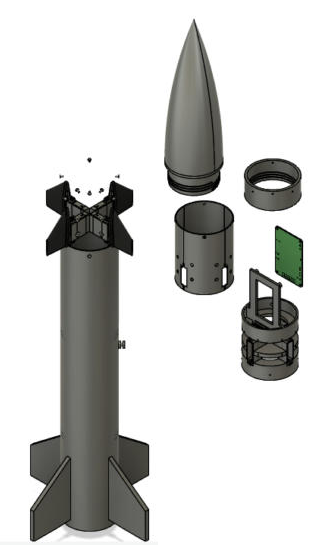
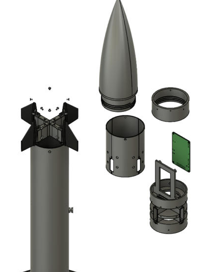
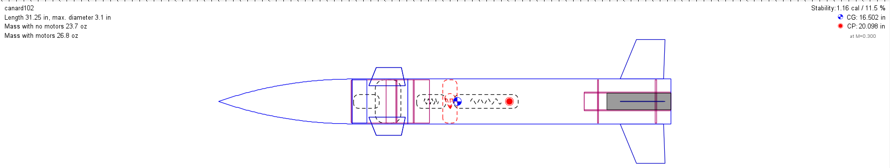

Longhorn Rocketry · Advanced Research · Hardware Lead
Active Rocket Roll Control
A subscale rocket that uses four servo-driven forward canards to actively cancel its own roll.
Ongoing: Version 11 upper body locked; finalizing canard size and starting ground tests
- Team
- 6 members
- Diameter
- 3.1 in
- Length
- 31.25 in
- Stability
- 1.16 cal
- Apogee (F67)
- ~776 ft
- Control
- 4 canards
Overview
I'm leading a 6-member hardware team developing a subscale active roll-control rocket for Longhorn Rocketry, using four independently actuated forward canards and four stationary aft fins. The goal is to actively reduce vehicle roll rate while keeping the system simple enough to manufacture, test, and iterate on a subscale vehicle.
My role
- Run design meetings, make the design calls, and set what the team works on next
- Led the move from fin tabs to forward canards
- Designed the Version 11 printed upper body in Fusion 360
- Built the vehicle baseline in OpenRocket
- Ran the actuator load check and wrote the MATLAB roll simulation
Current design: Version 11


For Version 11, I redesigned the upper body in Fusion 360 as a fully 3D-printed ABS assembly.
- One printed core. The servo casing and electronics bay are a single printed part.
- Serviceable. Four removable access panels wrap the bay, so the servos and wiring can be reached without taking the rocket apart.
- Nothing glued. Canards bolt to SovoArm servo horns with M1.6 screws; panels and couplers use M2.5 screws into a threaded-insert ring.
- Fast iteration. Printing costs less than buying airframe parts and lets us reprint in a day instead of waiting on orders.
ABS handles heat better than PLA (it softens around 100 °C vs. about 60 °C) and is tougher on impact, though it warps more while printing. I tuned fits and clearances by printing test pieces and adjusting. The printed structure comes to about 190 g before servos, fasteners, electronics, and canards.
We locked the architecture on September 30 so printing and integration could move forward. Canard size is the one thing still open.

How we got here
-
1 · Fin tabs

The project started with servo-actuated tabs built into the main fins. I worked on early vehicle modeling, CAD, actuator packaging, and physical prototypes. One prototype (pictured) used a printed internal lattice filled with epoxy: extremely rigid, but heavy enough that it would have shifted the CG aft and reduced stability. It was never load tested or flown.
The tab design had three practical problems: packaging, reusability, and wiring. With the servos buried in the fin, replacing one meant cutting into the fin, and the wiring had to run along each fin and up the outside of the airframe to the e-bay. I moved the project to a dedicated canard vehicle so the actuators could get their own packaging.
-
2 · First canard bay (SolidWorks)

I designed the first canard bay around four servos arranged radially, each aligned to a canard, with the servo-horn interface built into the canard root so actuator and surface package as one mechanism.
An earlier concept used a ~2.6 in airframe. Once the real servo geometry was in CAD, that size no longer worked, so I grew the airframe to 3.1 in. Building this bay also exposed a wiring-hole problem, which fed straight into the next redesign.

Servo bay 
Canard root / horn 
Packaged in the 3.1 in tube -
3 · Version 11 (Fusion 360)
The fully printed upper body above: one-piece servo casing / e-bay, removable access panels, and screwed joints throughout.
Analysis
The load check and roll simulation below were run on the earlier baseline (28.85 in, 1.38 cal, about 195 ft/s). They will be re-run on Version 11 once canard size is finalized.
Actuator load check
Because the servos were already bought, I ran a preliminary aerodynamic load check to see whether they had reasonable torque margin at the maximum load expected from the OpenRocket simulation.
.jpg)
ρ = P / (R T) ≈ 1.14 kg/m³
q = ½ ρ V² ≈ 2.00 kPa
F = q S CL ≈ 5.50 N per canard
Thinge = F d ≈ 0.0470 N·m
Tdesign = 3 Thinge ≈ 0.141 N·m
Assumptions
- Pressure: 1 atm
- Temperature: 311 K
- Max velocity: ~195 ft/s
- Deflection: 15°
- Lift slope: ideal CLα = 2π rad−1
- CL: ~1.6
- Canard area: 2.625 in²
- Load location: quarter-MAC
- Geometry: 2.50 in root, 1.00 in tip, 1.50 in span
- Load multiplier: 3×
The ideal 2D lift slope is a conservative screening reference, not a prediction of the real low-aspect-ratio canard. Quarter-MAC is a first-order estimate of the load location, and the 3× multiplier is a preliminary choice rather than a formal requirement.
Roll dynamics and controller
To evaluate control authority before building hardware, I wrote a 1-DOF MATLAB simulation of the closed-loop roll dynamics. The controller targets roll rate p and commands the four canards to oppose rotation.
- CAD-derived roll inertia ≈ 0.003096 kg·m²
- Proportional rate controller, Kp = 0.03, ±15° command limits
- Corona DS-239MG rate limit from its 6 V spec (0.14 s / 60° ≈ 428.6 deg/s); actual deflection is a simulation state
- OpenRocket V(t) exported and interpolated, so dynamic pressure and control torque change through the ascent (to apogee at ~6.29 s)
Iroll ṗ = τroll
δcmd = −Kp p
q(t) = ½ ρ V(t)²
F = q S CL
τroll = N F r
The biggest uncertainty is how effective the low-aspect-ratio canards really are, so I didn't want the conclusion to rest on the ideal lift slope. I reran the model at 100%, 75%, 50%, and 25% effectiveness, then swept initial roll rates of 100, 300, 600, and 900 deg/s (16 cases), timing how long each took to reach |p| ≤ 10 deg/s.


Result
All 16 cases reached 10 deg/s. The worst case (900 deg/s at 25% effectiveness) took about 1.26 s. That suggests the geometry has useful control-authority margin across the tested range, and it gives me a baseline to compare against hardware and flight data.
Model scope: roll axis only, 1-DOF rigid body, constant density, preliminary canard aero, simplified actuator. No pitch/yaw coupling or aerodynamic interference yet. Measured actuator and flight data will refine it.
Next steps
- Ground tests on printed V11 hardware (no flight electronics needed): full ±15° actuation sweep with a servo tester, a 3× static load and backlash check on a canard, and a pendulum test to measure the real roll inertia.
- Move the servo pivot. The servo shaft sits 1.30 in behind the canard root leading edge, but the canard’s aerodynamic center is about 0.77 in back, so the air load pushes the canard away from neutral. Moving the shaft to about 0.70 in cuts the design hinge torque roughly 7× (servo margin goes from about 1.9× to 14×).
- Work with the controls team on the flight computer and run closed-loop bench tests with the IMU.
- Fly the first subscale flights and compare the real vehicle against the MATLAB model.